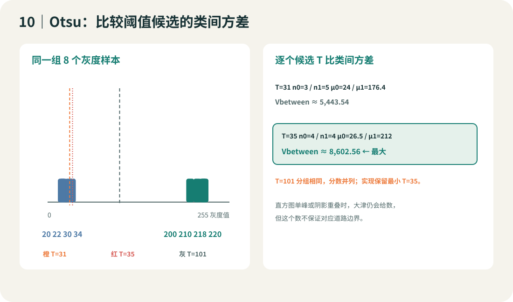
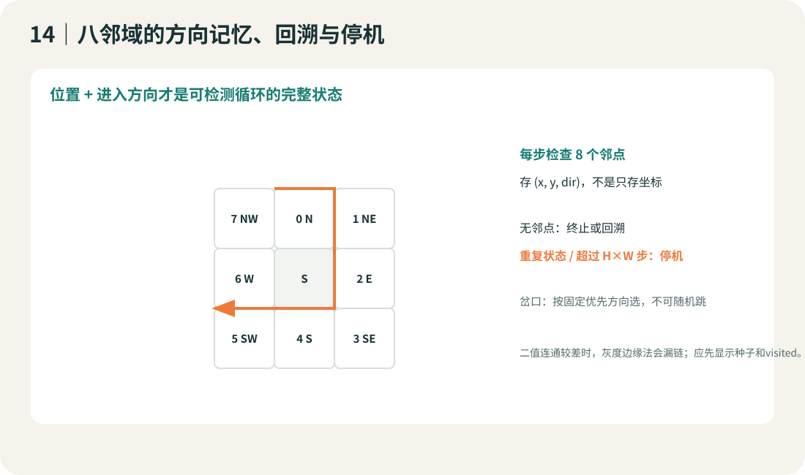
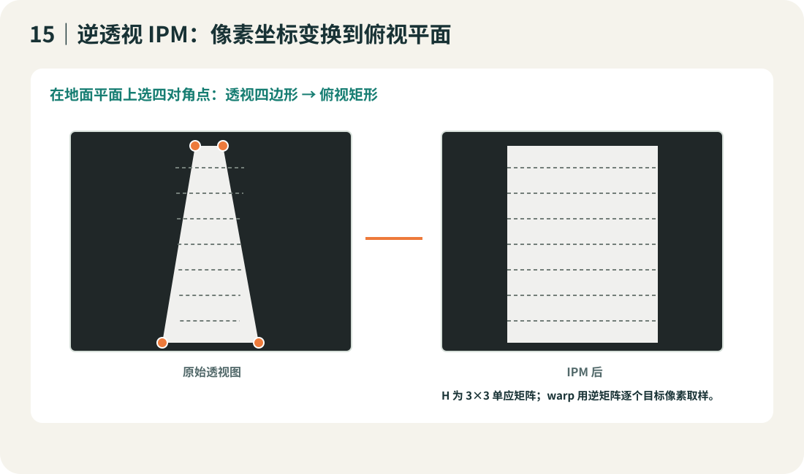

图像处理

互动实验 01大津 / 固定 / 逐行 / 局部
用大津法切分非理想灰度帧
大津法从当前 0..255 直方图自动挑一个全局阈值。切换阴影、高光和噪点场景，比较输入分布、Otsu T 与二值结果。
灰度输入 · 160 × 120
掩码 · 白色代表亮路面前景
当前场景 0..255 直方图
阈值/前景：—
观察直方图两类重叠、阴影使全局阈值偏移，以及局部窗口过小时掩码随噪点跳变。示例参数不是总钻风推荐配置。
互动实验 02空间采样 / RAM
降采样时，细线从哪一步消失
右侧把低分辨率数组用最近邻放大显示。改变宽高比例，比较边界连续性和灰度缓冲字节数。
原始灰度 · 256 × 160
缩小后最近邻放大
降采样尺寸—
GRAY8 缓冲—
同尺寸 1-bit 掩码—
ROI/降采样减少像素位置；位打包减少每像素存储位数；PNG/JPEG 改变文件表示。三种操作不等价。
互动实验 04二值边缘
Sobel 阈值化：只看边缘掩码
程序在内部计算两个方向的梯度幅值；滑杆只调整门槛，右图始终只显示 0/255 二值边缘。提高门槛后，弱边和噪点会逐步消失。
输入 GRAY8
阈值化边缘掩码（黑/白）
边缘像素：—
互动实验 05多色线条 / 边界读数
同一帧标出扫描行、左右边线和中点
切换逐行、中线继承或双最长白列种子，并移动 y。右图用不同颜色和实/虚线画出左右边线、中线、当前扫描行和当前中点。
二值道路与当前扫描行
左/右边线、中线与中点
- 左边线 L
- 右边线 R
- 中线
- 扫描行 y
- 当前中点
扫描结果：—
互动实验 06沿边界爬行
红线沿着弯曲道路边界逐步爬行
种子位于近端边界。每一步检查周围 8 个邻点，按进入方向选择相连的下一个边缘点；拖动步数观察路径、当前位置和下一步方向。
白色道路区域；红线沿边缘爬行
状态 = (x, y, 进入方向)
红线 已走过的边界像素
红点 / 箭头 当前位置 / 下一步方向
停止重复状态、无邻点或达到步数上限
路径步数：0
互动实验 07单应矩阵
拖动地平线宽度，观察逆透视 IPM
左图标记地面四个对应点；右图对每个目标像素用 H 的逆矩阵找回原图取样坐标。改变远端四边形宽度会改映射比例。
相机灰度图与四个标定点
IPM 鸟瞰灰度图
四对点 → 8 个自由参数；单应矩阵归一化 H[2][2]=1
灰度基础定义 → 数组
01｜一帧总钻风图像是什么
传感器给出 H×W 个亮度样本。GRAY8 每个像素一个 0..255 的数。第一步不是二值化，而是确认帧尺寸、灰度范围、图像稳定性和坐标。
 来源图：Joshua.Xu 图像篇，CC BY-SA 4.0，原图未改。
来源图：Joshua.Xu 图像篇，CC BY-SA 4.0，原图未改。
 来源图：Joshua.Xu 图像篇，CC BY-SA 4.0，原图未改。它展示 8-bit 灰度层次，不是彩色转灰度流程。
来源图：Joshua.Xu 图像篇，CC BY-SA 4.0，原图未改。它展示 8-bit 灰度层次，不是彩色转灰度流程。
基础
GRAY8 与 y/x
读 gray[y][x]：先行后列；左上是 (0,0)。把 3×4 像素写在纸上，把0/255和中间值分开标注。
进阶
曝光、失焦和暗角
看原始灰度图与分行直方图。黑/白剪裁或运动模糊丢掉的边界，阈值/扫线无法凭空恢复。
横向扩展
帧标志、数组所有权
驱动报告一帧就绪后再处理；确认 DMA 不会在处理时覆盖数组。单缓冲须用驱动保证的稳定时段或复制快照。
C 语言：打印一小块灰度
for (int y = 0; y < 4; ++y) {
for (int x = 0; x < 5; ++x)
printf("%3u ", (unsigned)gray[y][x]);
putchar('\n');
}
循环变量 y 是行，x 是列。二维 C 数组按行连续存储；有效下标范围必须是 y<H 且 x<W。
参考：Joshua.Xu 摄像头篇 · 图像篇 · OpenCV 图像矩阵与 ROI
大津法重点直方图 → 类间方差 → 阈值 T
02｜大津法：从直方图挑阈值
大津法逐个测试灰度阈值，把像素分为暗/亮两类，取类间方差最大的 T。先看原图与直方图，再验证阈值结果是否保留道路边界。
核心定义：选出让暗、亮两类最分开的灰度门槛
设图像共有 N 个像素。候选阈值 T 把 0…T−1 分进暗类 C₀，把 T…255 分进亮类 C₁。两类占比记为 ω₀、ω₁，均值记为 μ₀、μ₁。大津法计算 σ²B(T)=ω₀ω₁(μ₀−μ₁)²，选分数最大的 T。高分表示两类样本数量和灰度中心共同支持这条分界；它不认识“道路”，类别含义由我们检查。


手算样本为 {20, 22, 30, 34, 200, 210, 218, 220}。T=35 时暗类均值 26.5、亮类均值 212，ω₀=ω₁=0.5，分数约 8602.56；T=101 的分数相同，因为 35…101 之间没有像素改变类别。程序从小到大扫描并保留第一个最高分，所以返回第一档亮类灰度 35。
| T | 暗类数 n₀ | 暗类均值 μ₀ | 亮类数 n₁ | 亮类均值 μ₁ | 类间方差 σ²B |
|---|
| 31 | 3 | 24 | 5 | 176.4 | 约 5443.54 |
| 35 | 4 | 26.5 | 4 | 212 | 约 8602.56 |
| 101 | 4 | 26.5 | 4 | 212 | 约 8602.56 |
| 211 | 6 | 86 | 2 | 219 | 约 3316.69 |
展开：C99 大津法核心代码与逐段解释
#include <stdint.h>
uint8_t otsu_threshold(const uint8_t *gray, int width, int height)
{
uint32_t hist[256] = {0};
uint64_t sum_all = 0, sum0 = 0;
uint64_t total64;
uint32_t count0 = 0;
uint32_t total;
double best_score = -1.0;
uint8_t best_T = 1;
if (gray == 0 || width <= 0 || height <= 0) return 1;
total64 = (uint64_t)(unsigned)width * (uint64_t)(unsigned)height;
if (total64 > UINT32_MAX) return 1;
total = (uint32_t)total64;
for (uint64_t i = 0; i < total64; ++i) {
++hist[gray[i]];
sum_all += gray[i];
}
for (int t = 0; t < 255; ++t) {
count0 += hist[t];
sum0 += (uint64_t)t * hist[t];
const uint32_t count1 = total - count0;
if (count0 == 0 || count1 == 0) continue;
const double w0 = (double)count0 / total;
const double w1 = (double)count1 / total;
const double mean0 = (double)sum0 / count0;
const double mean1 = (double)(sum_all - sum0) / count1;
const double gap = mean0 - mean1;
const double score = w0 * w1 * gap * gap;
if (score > best_score) {
best_score = score;
best_T = (uint8_t)(t + 1);
}
}
return best_T;
}
hist[256] 统计每档灰度像素数；第一遍读图同时累加全图灰度总和。- 第二遍逐档把
0…t 累加为暗类；t+1…255 就是亮类，空类候选跳过以避免除零。
score 实现上面的类间方差公式。严格使用 > 更新，分数并列时保留更小候选值。- 返回
t+1，使白色前景规则 gray[y][x] >= T 与两类划分一致。计算量为 O(HW+256)，额外直方图为 256 个计数。
基础
固定 T 作对照
逐像素执行 gray≥T。先确认亮路面为白、暗背景为黑，再用小数组手算等号和分类。
进阶
Otsu 最大类间方差
累加直方图两类的数量、权重和均值，搜索使 w0·w1·(μ0−μ1)² 最大的第一档亮类灰度 T。并列时按从小到大扫描保留最小 T。
横向扩展
ROI / 逐行 Otsu
先裁掉天空、车壳等无关区域再做全局 Otsu；若亮度沿图像行变化，可逐行算直方图。单类行需标为无效，不能把任意返回值当可靠 T。
手算：8 个像素的 Otsu 分组
样本 {20,22,30,34,200,210,218,220}。T=35 时两类计数都是 4，均值 μ0=26.5、μ1=212，类间方差 0.25×(212−26.5)²≈8602.56。T=101 得分并列，因为中间没有新灰度样本改变分类。
C 代码检查点
第一遍建立 256 桶直方图与总灰度和；第二遍累加暗类，计算两类均值和类间方差。暗类为空或亮类为空时跳过。返回 T=t+1 与 gray≥T 规则一致。图像遍历为 O(HW)，另扫描 255 个候选阈值。
推荐：Joshua.Xu 图像篇 / 大津法 · OpenCV Otsu 阈值
减量与滤波采样 / 缓冲 / 噪声
03｜少存一点，别把边线采没了
“压缩”可能指减少空间采样、缩短像素位宽或压缩文件编码。先说明改变的是哪一种。

基础
ROI、最近邻 2×
只保留需要的图像区域，或每2×2取一个样本；80×48灰度为3840 B，40×24为960 B。窄线和远端细节会丢。
进阶
平均降采样、行缓冲
小块均值减少锯齿；行缓存用于滤波只保留必要行。缩小插值更平滑，但可能把窄亮道均成灰色。
横向
位打包与文件编码
二值uint8仍为1 B/像素；位打包8点/byte。PNG/JPEG是文件/传输编码，解码后仍可能要全幅缓冲。

均值滤波抹平尖峰但模糊边；中值抑制椒盐点且保留阶跃较好；形态学开闭修复二值小洞/小点。核越大，改变的边线也越多。中值 C99 代码和 PGM 输出见 C 实验包。
参考：Joshua.Xu 图像篇 / 图像压缩 · OpenCV Smoothing Images
梯度与边缘局部差分
04｜Sobel：阈值化边缘
阈值看某点够不够亮；Sobel 看邻域亮度朝 x/y 方向变化多快。只显示梯度强度时会同时看到物体两侧边缘。

基础
横向 / 纵向差分
中心左右相减估 Gx，上下相减估 Gy。跳变越大，梯度幅值越大。
进阶
3×3 Sobel 卷积
核 [-1 0 1; -2 0 2; -1 0 1] 估 Gx；转置核估 Gy。把乘加先放进 int16/int32，再取幅值并缩放。
横向
Scharr / Canny / 二阶导
Scharr改核权重；Canny增加非极大值抑制和双阈值连边；Laplacian求二阶变化。结果仍是边缘候选，不是“哪条是赛道”的判断。
三行手算
20 20 200 / 20 20 200 / 20 20 200：中心 Gx=180+360+180=720，Gy≈0。若只存 uint8，先缩放/截断，否则 720 会溢出或丢动态范围。
参考：Joshua.Xu 图像篇 / Sobel · OpenCV Sobel · OpenCV Canny
扫线和边界同一二值输入并列看
05｜扫线：逐行边界、中点和中线
相机灰度完成阈值后，得到白路面/黑背景掩码。扫线把二维区域简化为一组边界坐标，但所有坐标都应带有效标志。

 来源图：Joshua.Xu 边线提取篇，CC BY-SA 4.0 原图未修改。课程重新讲解数组过程。
来源图：Joshua.Xu 边线提取篇，CC BY-SA 4.0 原图未修改。课程重新讲解数组过程。
基础
逐行横向扫
在选定行从中心向左右找白→黑跳变，记录左白点、右白点与 valid。最简单，起点偏离道路时会找错。
进阶
双最长白列定种子
从图像底边逐列向上数连续白点，左右各取最长列当种子；最长长度可作有效搜索截止行，不是物理距离。
横向
中线继承 / 灰度差分
上行中点作为下一行起点；或直接对灰度比较间隔点灰度差分，跳过全幅二值中间图。保留 valid，设最大偏移防止漂走。
边界模式和失败点
亮路面约定下，左边界向左看“黑黑白”，右边界向右看“白黑黑”。若行内有噪声点、十字/环岛多分支、远端模糊，模式会产生假边。可记录白点连续长度、邻行一致性与失边数作为图像质量量。
参考：Joshua.Xu 边线提取篇 · USTB_Swan 团队实现取舍（历史个案）
连通跟踪有限状态遍历
06｜八邻域：沿着边界爬行
八邻域每次查看中心周围 8 格。它会沿边缘方向走，不再独立扫每行；优点是能保留方向，难点是种子、岔路、缺口和闭环。

基础
逐行扫描给种子
从近端行找到一个可靠边界像素；验证它的 8 个邻点中至少有前景邻点后才开始生长。
进阶
八邻域链码
依固定方向顺序查看邻点，移动并更新进入方向；记录 (x,y,dir)，重复状态代表环回，步数上限保护程序。
横向
迷宫式墙跟随 / 连通域
墙跟随让方向状态持续贴着同一侧边界；连通域则遍历所有连通点，适合先筛候选但内存可能 O(HW)。缺线时二者都不会凭空补线。
迷宫法不是“跑最短路的 BFS”。它是有边界跟随策略的局部遍历；左优先/右优先在分叉处结果不同。每个状态记录坐标与进入方向，并限制最多 H×W 步。C 模拟会把行走轨迹保存成 13_trace8.pgm，可逐格查看。
参考：Joshua.Xu 边线提取篇 · B 站八邻域教程（选学链接）（视频内容未用作事实依据）
几何变换单应矩阵
07｜IPM 逆透视：把道路映到鸟瞰平面
地面道路可近似为一个平面。选四对平面对应点计算单应矩阵 H，才能让远近尺度更好比较；相机动过后必须重新标定。

基础
四点对应
原图地面四角 (x,y) 对应俯视目标 (u,v)，每对点产生两条方程。H 有 8 个独立参数，尺度固定 H[2][2]=1。
进阶
逆向映射取样
对每个目标像素反算源坐标，用最近邻或双线性读灰度，避免前向投影留下空洞。
横向
映射表 / 行变换
提前存源坐标映射表能省每帧矩阵除法、但占 RAM/Flash；每行解析映射省表但增加算术。看图像尺寸后再选。
手算一组平面射影关系
若 H[2][2]=1，u=(h0x+h1y+h2)/(h6x+h7y+1)，v=(h3x+h4y+h5)/(h6x+h7y+1)。四对点给 8 个未知数；四点共线会使方程退化。C 文件给出高斯消元和逆矩阵仿真。
参考：Joshua.Xu 对 IPM 的说明 · OpenCV 透视变换接口 · USTB_Swan 逆透视标定工具线索
C99 实验灰度输入 / PGM 输出
08｜编译完整灰度处理仿真
程序自己生成有渐变、阴影、局部高光和噪点的 80×48 灰度帧，以大津阈值为主线，再运行其它阈值、滤波、Sobel、扫线、八邻域和 IPM，并保存 15 张 PGM。
同一输入的 C 仿真输出总览。每个文件可以单独放大查看。
基础
看一个灰度数组
先读 01_gray.pgm，人工对照印出的 12×8 数字块，自己判定路面边界在哪几列。
进阶
比较完整掩码与边界
打开 fixed/Otsu/per-row/Sobel PGM；观察最长白列、扫线和 IPM 分别改变了哪些像素/坐标。
横向
移植到目标驱动
只替换帧输入函数，保存驱动灰度快照后回放。本教材不提供与未给出的相机SDK/主控绑定的驱动源码。
GCC 编译命令
cd examples/c
gcc -std=c99 -O2 -Wall -Wextra -Wpedantic image_lab.c -lm -o image_lab.exe
.\image_lab.exe generated
编译不调用 OpenCV。生成 PGM 和运行输出仅作为算法模拟；RAM/运算分析应按实验室目标板重新测量。
下载 C 示例与 15 张 PGMMarkdownPDF